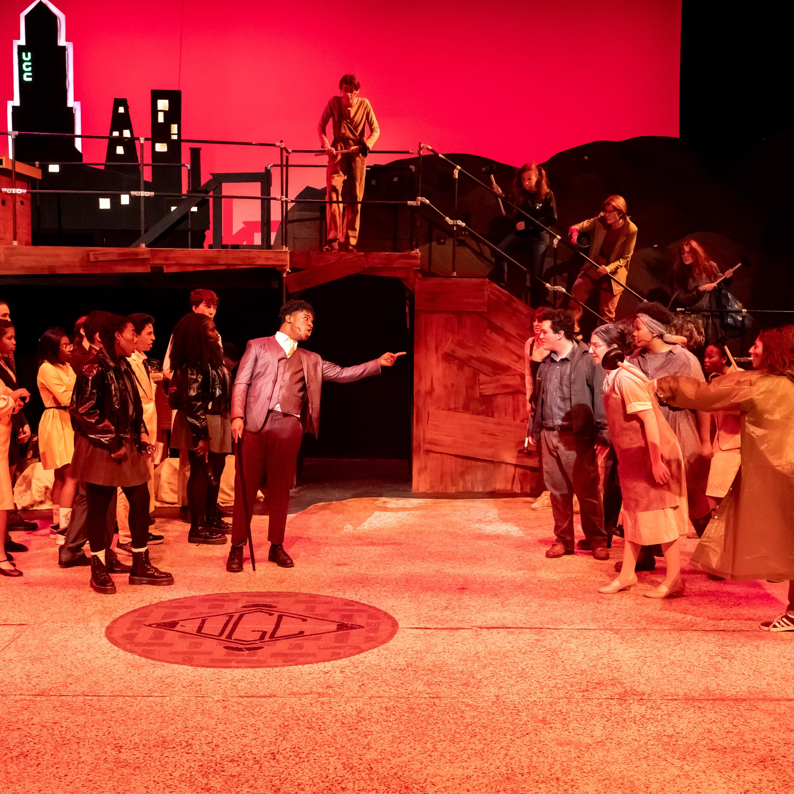
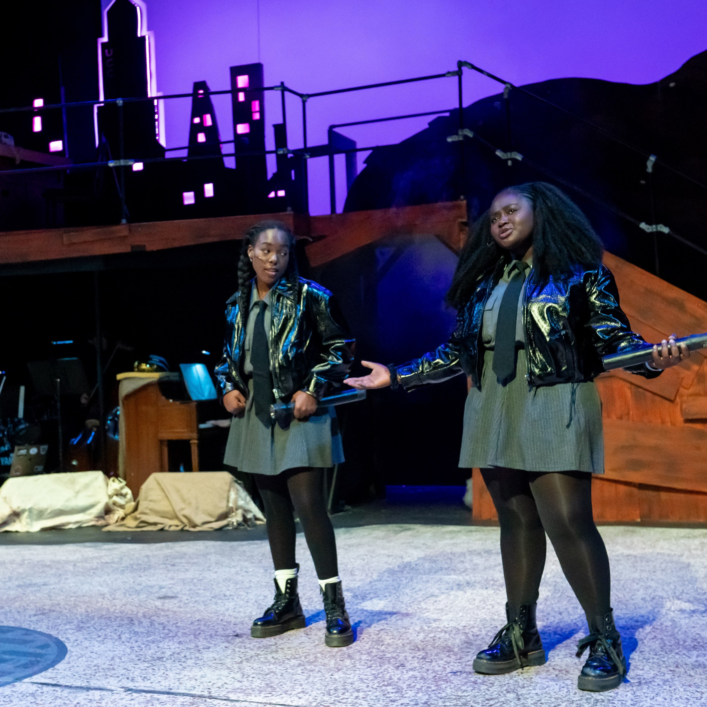
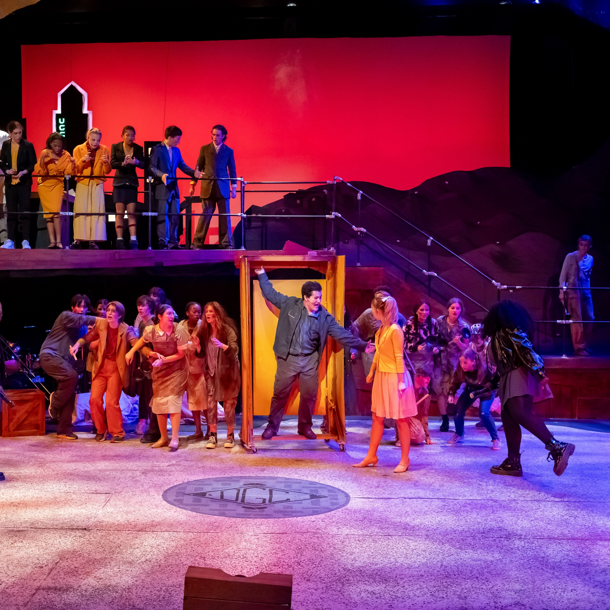
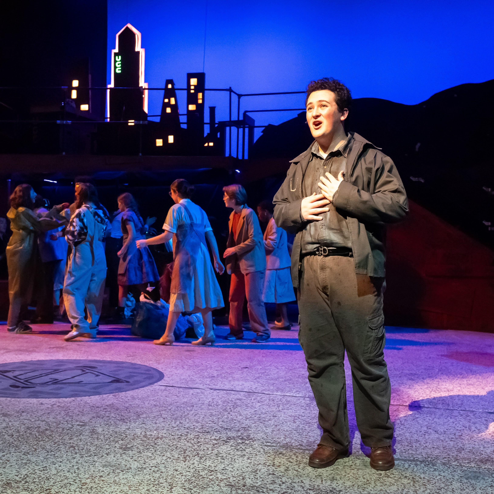

Urinetown

Abington Friends Muller Auditorium
- Kittson O’Neill, Director
- Seth Schmitt-Hall, Technical Director
- Yael Smith Posner, Assistant Director
- Myles Martin, Lighting Designer
- Annalise Settefrati, Costume Designer
Co-Set Designer with AFS Technical Theater Design Class
Practical Experience
Process Photos & Paperwork
- Worked with Josephine Zemsky to create concept art for a city flat.
- Created technical drawings based on concept art.
- Worked with the director to shift city concept for falling special effect, inspired by John Napier’s work for Javert’s death in Les Misérables.
- Re-drafted, constructed, rigged, and wired new flat with built in LED circuitry (Oliver Peterson and Tamara Brockington assisted with circuitry).
- Worked with Ash Cohen on railings to fit the design, while maintaining safety for cast and crew.
- Worked with Oliver Peterson and Tamara Brockington to wire LED tape for orchestra downlight and actors’ entrances.
- Helped to plan and build stall door mounted on wheels for public amenity number four.






Photos by John Flak